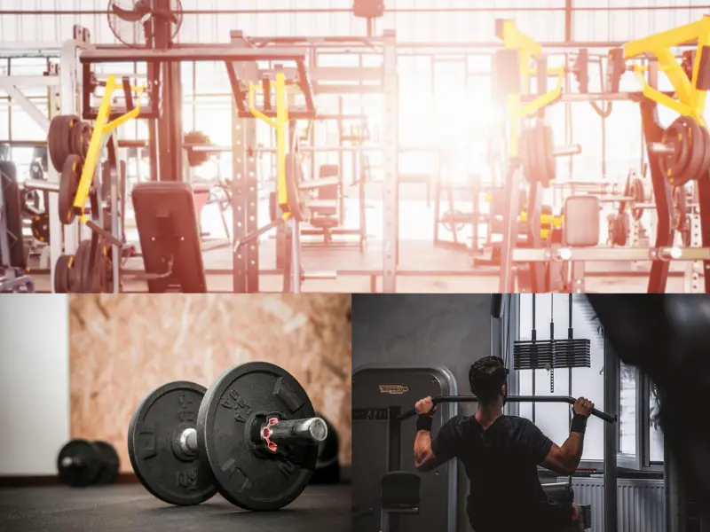
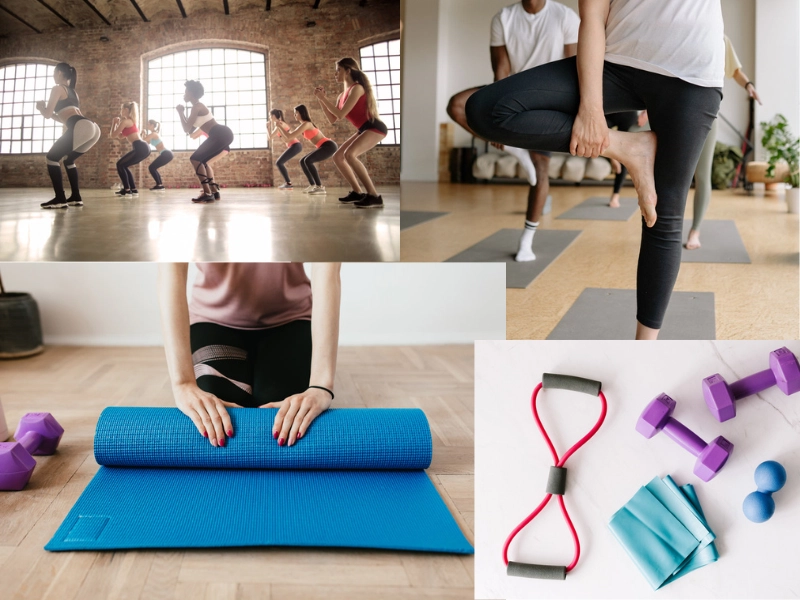
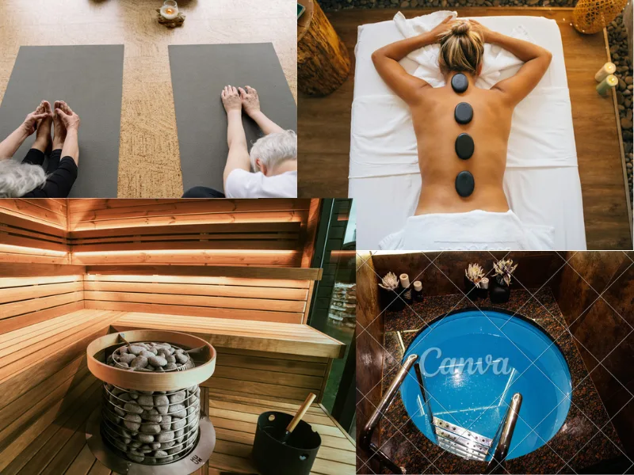

Palvelumme
Meillä voit treenata ja palautua samassa paikassa! Laadukkaalta kuntosaliltamme löydät kuntosalilaitteet niin peruskunnon ylläpitoon kuin voimaharjoitteluunkin. Kuntoilua voi täydentää monipuolisesti ryhmäliikunnalla. Kehon palautuminen on tärkeä osa liikuntasuorituksia, ja siksi tarjoammekin myös palautumispalvelut saman katon alta.
Kuntosali
Kuntosalillamme on käytössä laadukkaat Technogym-merkkiset laitteet. Lisäksi meillä on erillinen alue vapaille painoille.
Olemme huomioineet erilaisien liikkujien tarpeet. Kuntosalilaitteet ovat helppokäyttöisiä ja niitä huolletaan säännöllisesti.

Ryhmäliikuntatunnit
Ryhmäliikuntatunneille pääset viikon jokaisena päivänä. Meillä järjestetään säännöllisesti muun muassa Zumbaa, Bodypumpia, pilatesta ja kahvakuulatunteja. Katso tarkemmat aikataulut ryhmäliikuntakalenterista!
Tiloissamme on myös videotreenitila, jonka voit varata videotreenin tekemistä varten. Monipuolisesta videotreenivalikoimastamme voit nauttia suomeksi, ruotsiksi ja englanniksi.

Ryhmäliikuntakalenteri
Ryhmäliikuntaa järjestetään päivittäin, ja ryhmäliikuntakalenteri vaihtuu kahden viikon välein. Tunteja on yleensä kello 7-8, 12-13, 17-18 ja 18.30-19.30. Muistathan ilmoittautua ryhmäliikuntatunnille etukäteen!
| Klo | Maanantai | Tiistai | Keskiviikko | Torstai | Perjantai | Lauantai | Sunnuntai |
|---|---|---|---|---|---|---|---|
| 7-8 | Zumba | Kahvakuula | Bodypump | Zumba | Bodypump | Kahvakuula | |
| 12-13 | Kahvakuula | Pilates | Kahvakuula | Kahvakuula | Zumba | Zumba | Pilates |
| 17-18 | Pilates | Zumba | Zumba | Bodypump | Kahvakuula | Pilates | Zumba |
| 18.30-19.30 | Zumba | Kahvakuula | Bodypump | Zumba | Bodypump | Kahvakuula | Kahvakuula |
Palautuminen
Muistathan palautua treenin jälkeen! Palautumispalvelujen käyttäjänä pääset käyttämään hierontatuoleja, venyttelytiloja ja kehonhuoltovasaroita. Venyttelytiloissa voit tehdä ohjattuja venyttelyharjoituksia. Lisäksi tarjoamme kuumakivihierontaa ja urheiluhierontaa. Palautumisalueeltamme löydät myös kylmäaltaan ja saunan.
